E-text prepared by Jason Isbell, Janet Blenkinship,
and the Project Gutenberg Online Distributed Proofreaders Europe
(http://dp.rastko.net)
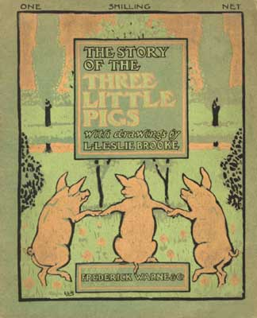
Frederick Warne & Co.
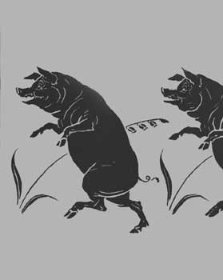
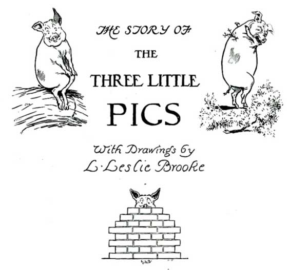
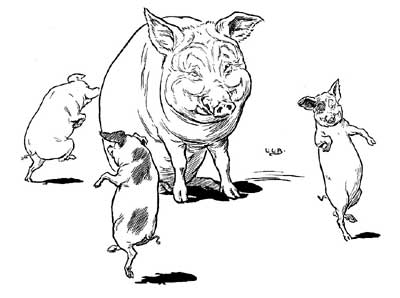
Once upon a time there was an old Sow with three little Pigs, and as she had not enough to keep them, she sent them out to seek their fortune.
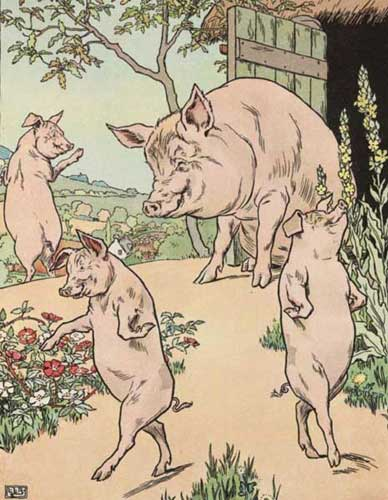
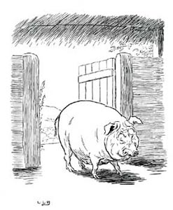
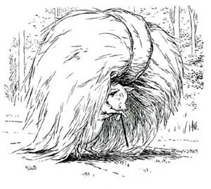
The first that went off met a Man with a bundle of straw, and said to him, "Please, Man, give me that straw to build me a house"; which the Man did, and the little Pig built a house with it. Presently came along a Wolf, and knocked at the door, and said, "Little Pig, little Pig, let me come in."
To which the Pig answered, "No, no, by the hair of my chinny chin chin."
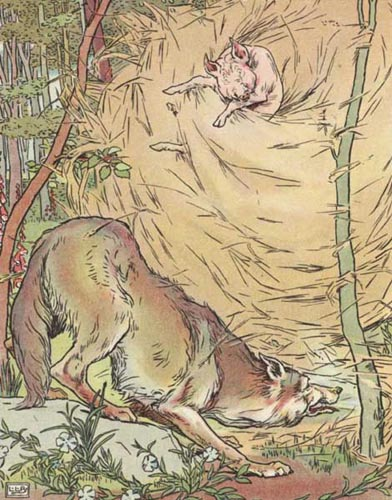
"Then I'll huff and I'll puff, and I'll blow your house in!" said the Wolf. So he huffed and he puffed, and he blew his house in, and ate up the little Pig.
The second Pig met a Man with a bundle of furze, and said, "Please, Man, give me that furze to build a house"; which the Man did, and the Pig built his house.
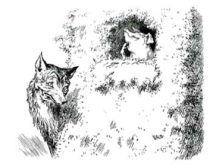
Then along came the Wolf and said, "Little Pig, little Pig, let me come in."
"No, no, by the hair of my chinny chin chin."
"Then I'll puff and I'll huff, and I'll blow your house in!" So he huffed and he puffed, and he puffed and he huffed, and at last he blew the house down, and ate up the second little Pig.
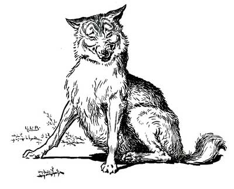
The third little Pig met a Man with a load of bricks, and said, "Please, Man, give me those bricks to build a house with"; so the Man gave him the bricks, and he built his house with them. So the Wolf came, as he did to the other little Pigs, and said, "Little Pig, little Pig, let me come in."
"No, no, by the hair of my chinny chin chin."
"Then I'll huff and I'll puff, and I'll blow your house in."
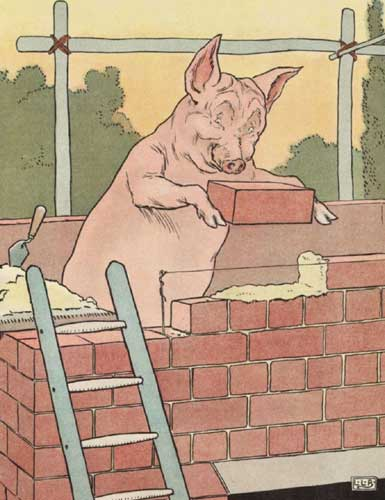
Well, he huffed and he puffed, and he huffed and he puffed, and he puffed and he huffed; but he could not get the house down. When he found that he could not, with all his huffing and puffing, blow the house down, he said, "Little Pig, I know where there is a nice field of turnips."
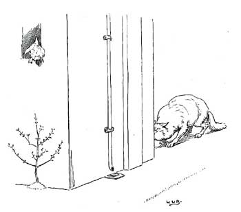
"Where?" said the little Pig.
"Oh, in Mr. Smith's home-field; and if you will be ready to-morrow morning, I will call for you, and we will go together and get some for dinner."
"Very well," said the little Pig, "I will be ready. What time do you mean to go?"
"Oh, at six o'clock."
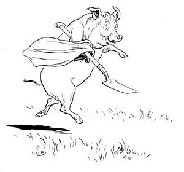
Well, the little Pig got up at five, and got the turnips and was home again before six. When the Wolf came he said, "Little Pig, are you ready?"
"Ready!" said the little Pig, "I have been and come back again, and got a nice pot-full for dinner."
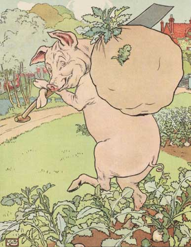
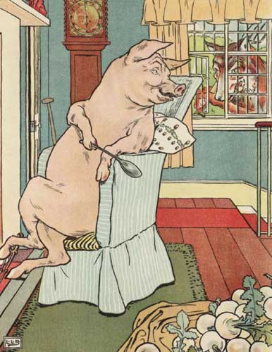
The Wolf felt very angry at this, but thought that he would be up to the little Pig somehow or other; so he said, "Little Pig, I know where there is a nice apple-tree."
"Where?" said the Pig.
"Down at Merry-garden," replied the Wolf; "and if you will not deceive me I will come for you, at five o'clock to-morrow, and we will go together and get some apples."
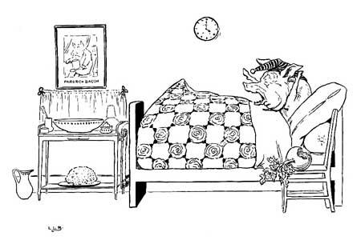
Well, the little Pig woke at four the next morning, and bustled up, and went off for the apples, hoping to get back before the Wolf came; but he had farther to go, and had to climb the tree, so that just as he was coming down from it, he saw the Wolf coming, which, as you may suppose, frightened him very much. When the Wolf came up he said, "Little Pig, what! are you here before me? Are they nice apples?"
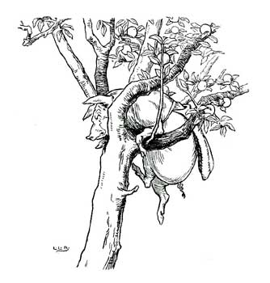
"Yes, very," said the little Pig; "I will throw you down one." And he threw it so far that, while the Wolf was gone to pick it up, the little Pig jumped down and ran home.
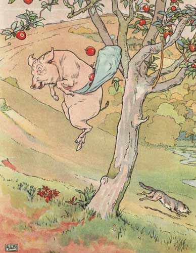
The next day the Wolf came again, and said to the little Pig, "Little Pig, there is a Fair in the Town this afternoon: will you go?"
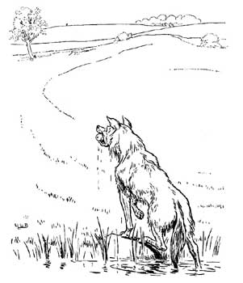
"Oh, yes," said the Pig, "I will go; what time shall you be ready?"
"At three," said the Wolf.
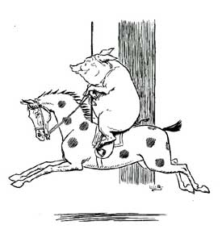
So the little Pig went off before the time, as usual, and got to the Fair, and bought a butter churn, and was on his way home with it when he saw the Wolf coming. Then he could not tell what to do. So he got into the churn to hide, and in doing so turned it round, and it began to roll, and rolled down the hill with the Pig inside it, which frightened the Wolf so much that he ran home without going to the Fair.
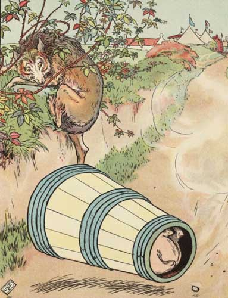
He went to the little Pig's house, and told him how frightened he had been by a great round thing which came down the hill past him.
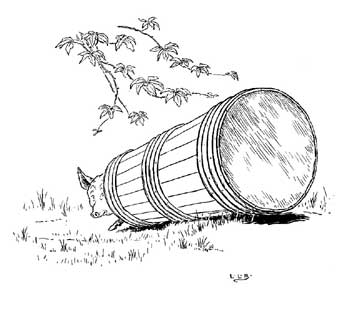
Then the little Pig said, "Hah! I frightened you, did I? I had been to the Fair and bought a butter churn, and when I saw you I got into it, and rolled down the hill."
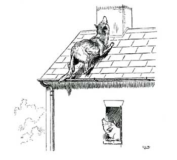
Then the Wolf was very angry indeed, and declared he would eat up the little Pig, and that he would get down the chimney after him.
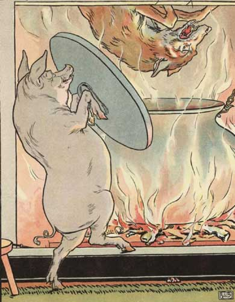
When the little Pig saw what he was about, he hung on the pot full of water, and made up a blazing fire, and, just as the Wolf was coming down, took off the cover of the pot, and in fell the Wolf. And the little Pig put on the cover again in an instant, boiled him up, and ate him for supper, and lived happy ever after.
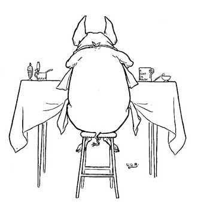
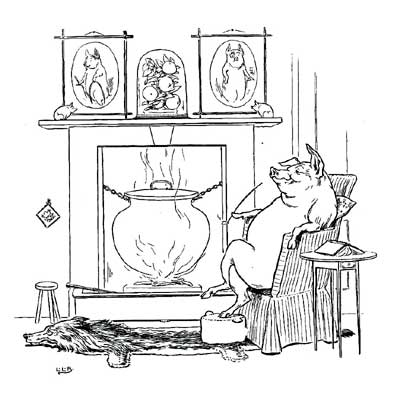
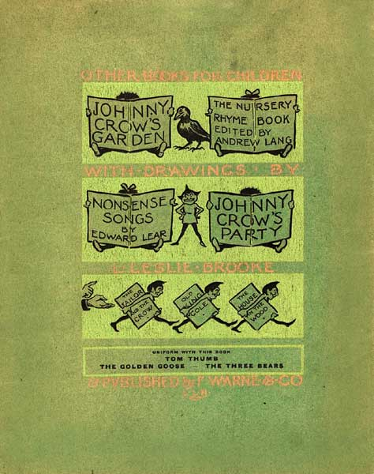
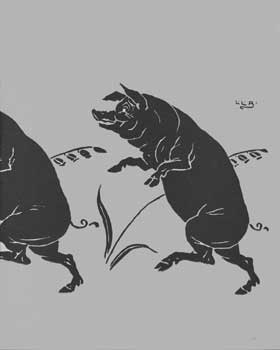